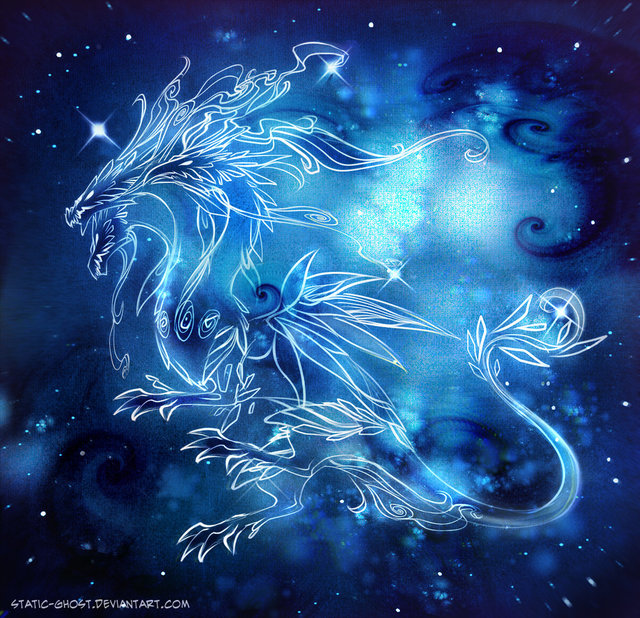

DRAGONS
Fantasy Faction Monthly Writing Contest Anthology, December 2016
Dragon by Chevsy
After last month's theme seemed like a punishment detail to some of you and because Christmas is coming, we decided to give you a treat. Something you will want to write about even with all the holiday action around you. Something grand. Something terrifying. Creatures you complained about being not depicted as they should be. A chance to exactly do this. Write about Dragons. Absolve yourself and picture them as the menacing, intelligent, magical, godlike terrors they are. Or not. It's - as always - up to you.
All content originally appeared on the Fantasy Faction Forums in the Monthly Writing Contest. You can see more information (and even participate in the forums!) on this particular contest by visiting the site.
http://fantasy-faction.com/forum/(dec-2016)-dragons%21/(dec-2016)-dragons%21-submission-thread/
Table of Contents
- Tickling the Dragon's Tale by TOMunro
- Anne's Words by The Gem Cutter
- For The Culture by Osahon
- Tasfin's Trade by Bradley Darewood
- Bet Smaug Never Had to Put Up With This... by Rukaio_Alter
- Hunt by Roelor
- Dragonslayer by Anonymous
- The Living Night by Nora
- The Fishwife's Tale by Jmack
- Vengeance, of a Sort by tebakutis
- Dugo's Tale by Alex Hormann
- She Would Not Run Away Again by LightRunner
- Reviled, Reversed, Curse by m3mnoch
- Of Heart & Hoard by NightWrite
- A Fitting by Crystallynnfairy
- The Dragon and the Lamb by Lanko
Tickling the Dragon's Tale
By TOMunro
“It’s too dangerous, Shedmaster. It would violate all the protocols.” Dag paused. “It scares me.”
Sloti looked away at his subordinate’s frank admission, glancing through the thick lead-glass window that separated the control room from the cavernous bleeding chamber. He supressed a shiver. A decade of working the sheds had still not inured him to the experience of being eye to eye with a dragon, albeit a chained and dormant one. Cherna lay immobile on the tempered steel lattice atop stone columns towering four storeys above the shed floor. Even through the glass he could feel her heat, fancied he could sense the invisible rays emitted by the activated blood coursing through her veins. Here lay a creature who could kill a man in her sleep. Maybe Dag was right to be afraid.
He shivered away the momentary doubt. A half-dozen technicians beetled across the shed floor pushing trolleys from the curing bay towards the delivery room. He had been one of them once, weighed down by a white suit lined with lead plates as he wheeled seasoned power rods across the shed floor - long dark cylinders of solidified dragon’s blood which the technicians laughingly called black puddings.
The grim humour masked everybody’s nerves. The precious rods needed such careful handling, hot to the touch even through the asbestos gloves. Brought together in a precise array, they could amplify each other’s heat to instantly boil water. Sloti’s father had said, give an engineer enough steam and he could make anything happen. King Andreas the Dragontamer had understood that maxim well, a whole empire built on the miracle of unlimited steam, driving engines of every description. Steam generated by the heat from dragons’ blood.
Dag came up beside him, watching the routine spectacle. He leant suddenly across to haul on the alarm klaxon, a single blaring note that froze all activity in the shed. Men turned expectantly towards the control room where Dag was already growling into the speaking tube. “Technician Feynma, watch your separation. Keep those rods at least four cents apart. D’you want to trigger a flashover?”
The distant Feynma acknowledged the command with a gloved salute. Dag ran a palm over his balding head, hair long since pushed out by the worry of his responsibilities. “Isn’t what we do dangerous enough?” he asked.
Sloti looked back at the dragon. Cherna, second surviving daughter of the broodmother Alba. Since he had taken command, Shed C had been the most reliable of the half-dozen dragon sheds, regularly meeting every production quota and deadline. But Cherna could never be as big or productive as her mother. When the dragontamer had first harnessed the blood of dragons, Alba had been an ancient wyrm too large, in truth, for comfortable handling. Committees of engineers had decreed the optimum size for her offspring and the subsequent sheds had been built to those dimensions. The organic portion of Cherna's feed carefully calculated to allow her to grow into her cage and now each measured meal of cattle and sheep was just sufficient to precisely replenish the blood they drew from her every fourth day.
Of course it was rock, not food that energised the lizards’ lives. A unique metabolism refining ore to fill their blood with activated neptunium. The radiation it emitted could supplying the heat and energy to keep a dragon alive even in a dormant state for decades, centuries even.
“We do well enough.” Dag’s observation stirred Sloti from his reverie.
“Six sheds, six dragons, that’s all we have and - as of last week - it is all we ever will.”
“There will be other males. The hunters will find one in the wild.”
Sloti rounded on him. “No they won’t. Zarin wasn’t just the last male dragon in captivity. He was the last male dragon anywhere. Poachers who don’t know any better have found and drained the corpses of every dragon. There will be no more males, no more eggs to hatch.”
Dag looked down at the hemispherical incubation pit on the shed floor, directly beneath the dragon’s belly. The dragontamer had imagined breeding dragons would be easy – boy meets girl, a few years later out pops an egg. However, there had been several accidents of incubation. Getting the egg precisely placed was no mean feat, balancing its need for warmth from its mother’s body against its need for protection from her radiation.
At last the engineers had understood the creatures’ fascination with a dense but highly conductive metal and why male dragons brought gold as a courting gift, when male birds just built nests. Lead, steel, copper or poured stone, all had been tried and failed as a substitute for gold.
So, whenever a dragon was pregnant the royal treasury was emptied, gold piled and shaped in a gleaming hoard between the mother on high and the egg’s resting place. Cherna had laid just one egg long ago. Some misalignment of the gold or the necessity of being inseminated with her own father’s seed had produced a hatchling too weak to break out of its own shell. Only Alba had been bred from successfully - five daughters from seventeen attempts.
“There will be no more dragons, Dag. We must make the most of those we have.”
“But to lace the ore grindings with spent dragon blood?”
“It will enhance the enrichment process. The new blood will be half again as potent as the old. We can draw the power of nine dragons from just six sheds.” Sloti grabbed his deputy’s arm, eyes bright with enthusiasm. “We will be heroes of the empire.”
Dag said nothing and Sloti heard agreement in his silence.
***
“See!” Sloti waved a sheet of technical data in Dag’s face. “It is better even than I expected. Nearly 60% enhancement in the fuel yield.”
Dag stared out of the viewing port at the dragon, watching the flaring of its nostrils with each inward breath. A pebble of niggling thought triggered a sudden avalanche of understanding. “Shedmaster, if the blood we draw out has a higher yield, then so does the blood we left in her!”
“What?” In one short syllable Slotin went from irritation to horror. A crashing snap sounded through the glass, a sundered chain that had held Cherna’s forelimb for centuries. “Oh Gods. What have we done?”
The dragon stirred. At the far end of the shed its tail swept a lazy arc through a dozen technicians. A century long balance of feeding and bleeding to keep the creature on the cusp of dormancy abruptly undone by their irresponsible experiment. Driven by the enhanced blood, Cherna woke from slumber.
“The control rod!” Dag leapt for the red lever – the fail-safe system to release a massive steel rod poised above Cherna’s chained head. Explosive charges would drive it through her skull into instant euthanasia.
“No!” Sloti pulled him back. “We must draw off more blood to compensate.”
“It’s too late for that you fool.”
And it was. The lead lined window shattered at the tap of Chenya’s claw. The dragon raised its head, maw opening to breathe into the control room. Dag saw it all, the two ducts in the corners of her mouth squirting jets of black blood, shaped into a ball by her forked tongue. He flung himself behind the console. Sloti stood transfixed by the terror he had unleashed. And then the blood-ball went super-critical. With a blinding blue flash, a tsunami of heat washed through the control room.
Dag struggled upright beside the melted smouldering console. His hands were already blistering, he wanted to vomit. There was nothing left of Sloti but a thin shadow of dust on the far wall. With agonised steps Dag staggered to the red lever. In the shed beyond the dragon was writhing effortlessly free of its chains. He pulled at the half-melted lever and it finally yielded just as the dragon’s attention lunged back towards the smoking man in the tiny room.
The control rod fell with the force of a mountain behind it, puncturing Cherna’s neck. The dragon railed in agony, widening the wound as black blood poured from her throat, cascading from the gantry to the shed floor.
Those technicians not already dead ran from the staccato bursts of flashovers as pooling blood collected in critical puddles.
“Oh shit,” Dag muttered through melted lips. The copious quantities of dragon blood were draining towards the incubation pit, a perfect receptacle to collect a super-critical mass of fluid. A charge beside which the lethal flashovers were mere sparks. Power enough to flatten everything in a two mile radius, everything apart from the dragons.
He stumbled to the windows at the far side of the control room. Bylla’s shedmaster looked up from within a panicked crowd rushing in random directions at the sounds of disaster.
“Save yourselves,” Dag called. “Bury us in poured stone.” It was the only way, but even as he said it, Dag knew it would not be enough.
Anne's Words
By The Gem Cutter
In a remote valley, news of an approaching army sparks panic. A small mountain town is caught between the dragon to their north and invaders from the south. During their frenzied preparations for hopeless battle, a willowy young girl makes secret plans.
In the dark before dawn, she hefts her bag and takes the chilly mountain paths up towards the dragon’s lair, high in the crags in the upper valley, where the pines end and the winds moan.
She comes to the yawning cavern at dusk. The earth and stones are scorched black and lifeless from the heat and worn smooth by the creature’s passing. She calls out and peers into the darkness, waiting for the golden glow. It comes, and the ground shakes. She kneels, forehead pressed to the earth.
The rumbling rasp is sword-edged and stinks of sulfur: “What brings you, mortal?” The words come slow and hateful.
“Great need, Most Glorious.”
“Squeak!” the dragon laughs. “Make your pleas.”
The girl looks up. The dragon’s fiery, gold-red glory makes her seem tinier still. Each scale is like a burnished bronze shield, rimmed with ruby. The folded golden wings glimmer with fire-red tinges. Long, curving horns sweep from the back of the sharp-snouted head. The dragon’s great eyes, green and fixed upon her, glint with their own light.
“An army comes to destroy our town,” she says, her voice small in the dragon’s terrible presence.
“My larder, you mean.” The laughter rolls like boulders. “What of it? Your people or the next, it makes no difference.”
“I come to make an offering: I will give you what you do not have if you will save my people.”
A tremor runs from the snout up the frilled neck, across the scaled shoulders, and down the long, coiling tail that sways this way and that, while the unblinking emerald eyes hover. The dragon sniffs her. The voice falls to a hateful, hissing whisper. “What can a girl who smells of goat shit offer, that I would ever want?”
Before she can answer, the dragon lifts its head, and a gout of orange flames roils across the cavern’s ceiling. “What do I lack,” the dragon roars, “that I could not take from anyone, anywhere, anytime I choose? That I could not wring from your dead body?”
The dragon opens a handful of talons, each longer than the girl is tall.
“Words!” the girl cries as she cowers from the dragon’s heat behind her upraised arm.
The dragon’s black, forked tongue lashes out between scorch-stained teeth the size of swords. “What need have I for mortal words? Weakling thoughts! Mutterings of sheep! Even your kings whine like dogs.”
“Not mortal words!” the girl shouts shrilly over the dragon’s rumbling. “Your words – the words of your life, of the world as only you have seen it.”
The dragon pauses and turns its mighty head.
“If you will tell me the tale of your life,” the girl says, “I will fashion for you a story the likes of which no mortal has ever known or dreamt of: the movements of a greater soul, one that has tasted the promise of a thousand dawns…”
“Fifty-thousand, and more,” the dragon hisses. “But this has been tried before. Another fool girl came to me once, who thought her voice fair enough to woo me.”
“Yes,” the girl says. “My grandmother’s mother.”
“Ah! I see the resemblance, but I don’t smell it. You’ve the stink of your fathers’ line,” the dragon croons and grins a grin of a thousand teeth. “I found her screams sweeter than her singing. Would your dying words not sound sweeter, too?”
“My words will give you something sweeter than anything you have,” says the girl, cocking her head.
The golden head swings to face her. “I have more gold than you can imagine. I could rain wealth on your town for a season.”
“But why have it?”
“Because it is craved by men,” the dragon snarls. “They want what I have, and I have what they want just to have it, the wergild of a hundred generations of your kind. More precious than treasure is their longing for it!”
“Surely you have your own desires.”
“The only thing I desire I have even more of than gold – fear.” The dragon rends the earth with its claws, growling like a landslide. “All things are my prey. Eagles flee like moths before my flames. Men a hundred leagues away watch the sky with dread. The bravest warriors fall silent at the rumor of my passing. The mightiest kings despair at my approach.”
“Th-that is so,” the girl stammers. “You have terror and treasure. But not envy. Not yet. But there is something else you have mortals might come to covet - with my help.”
“What?” laughs the dragon, gnashing its teeth with a ringing snap.
“Now, people look on you like a dangerous beast - one possessed of a great treasure, but a beast nonetheless. They wish you would die and leave what you have behind. But any miserly man can say the same.”
The green eyes burn brighter, and their slits narrow intently.
“But if you will help me, Archmaldegon, I will give you something new. I will craft a tale where you are the hero, noble and triumphant over challenges beyond the reckoning of mortals. I will make them envy you and covet your ageless life, the power of your strength, the joy of burning eagles from the sky. In the shadow of your magnificence, the drab lives of men shall seem even shabbier.”
The dragon leans close, its vast eye looming down as broad as an apple barrel. The slit of the iris widens as it takes her in. “Go on.”
From her bag, the girl draws a piece of parchment, a small jar of ink, and a quill. She sits on a stone and makes ready. “Tell me how your life began.”
The dragon lays its head on the ground before the girl. Tendrils of smoke curl from the nostrils. “I hatched five and a half thousand years ago, the only gold in a clutch of four hatchlings. My siblings were Dersenian, who was icy-blue, Helcanar, who was red, and Charontrix, a lovely, long-necked green.” The line of its enormous jaws curls into a grin. The eyes roll closed, and the dragon’s tongue runs the circuit of its jaws, wet and swift. “While my mother hunted in the hills, one by one I killed and devoured them. How she screamed! But she loved me all the more – the strongest and fiercest. There is no love greater than a dragon’s for its young.” The dragon’s eyes snap open. “Nobler than any love your human heart might hold.”
The girl nods and writes while the dragon stares.
After a few minutes, the dragon snorts sooty sulfur fumes that billow the girl’s hair. The girl looks up. “I thought a dragon would be more patient.”
The dragon’s eyes flare. “Have a care. You have aroused my curiosity.” A thudding growl echoes from deep within. “Nothing more.”
With a final flourish of her quill, the girl stands straight and proud and holds her parchment before her. In a clear voice that rings off the rocks she reads:
“‘For five and fifty centuries have I, Archmaldegon the Golden Dragon, tasted the winds of this life. It was I that slew Dersenian, mighty azure dragon of noble lineage and bearing. It was I that brought death to Helcanar’s crimson majesty and took the light from Charontrix’s emerald eyes. While men toiled in the mud and stacked their bricks of cow shit and straw, I soared the paths of the wind and rode the whispering ways of twilight. Singing whales of distant seas dive and drown themselves in the terror of my shadow.’”
The echoes die. The girl kneels and presses her forehead to the earth, parchment held tight in her fist.
“More,” hisses the dragon.
“Save my people,” the girl says without looking up.
A silent moment passes, measured in scores of fluttering heartbeats.
The dragon rears up on golden-scaled legs, each thicker than the greatest trees, and issues from the cavern. The ground shakes at its passing. Pebbles and stones fall from the roof.
Outside, Archmaldegon turns to face the girl and fans its mighty wings like golden sails. “Have you a name?”
“Anne.”
Archmaldegon coils for a leap, tension rippling beneath the gilded scales. “I will slay this army, Anne, and devour its captains like so many sheep. And when I return, so shall you, or I will burn your town and people to cinders. And then you will give me more words to stoke the vanities of men.”
Anne bows her chin to her chest. “As you say.”
With a thunderous rush of wings, Archmaldegon mounts the sky.
Anne watches in silence until the dragon dwindles into the distance. She shudders in terror, breathes deep and slow, and then begins her long walk home.
For The Culture
By Osahon
The reservation, though it be my place of birth, has never felt like a home.
Mama says that I'm just confused, though she never sounds true when she says the words. She never looks happy either. Unlike me, she actually had a home before she was captured. I wish I could go and visit, but the humans won't ever allow us to leave.
There are other reasons too. Mama says that they would never accept me there, that I'm an outcast. Papi wouldn't be able to come too, but that's for other reasons. Mama doesn't seem to like him that much, so much so that she moved away from him, as far as she could, which is not that far—not on this dust-covered slate I’ve known all my life.
I feel strange; if Mama says I'm an outcast, then what exactly am I? Nobody seems to know the answer to that question, not even Nomo, and his Mama and Papi live together. He has a small semblance of a home, so he should be able to help me understand, but he’s just as muddled. Some days he embraces his dinosaur heritage, while other days he insists on using dragon genders. I just refer to him as Nomo, so I don't make any mistakes.
There was a time when Mama wanted to hurt herself. When the humans flogged her with the sharp whip—the one they specially made to hit the scaly dragons—she tried to get them to wrap it around her neck and strangle herself with it. They took her away for some time. I stayed with Papi then and asked him why Mama was so sad. He told me that it was hard to be away from home. When I asked why she hated him, he stopped talking. I don't think he'll ever answer that question.
Ma’s better now, but she still bites her tongue, making herself bleed every now and then. I try my best to keep watch over her, but it’s hard. I like it when she’s stable and strong and can take care of me, not the other way around. I don't do as good a job of caring as her.
Mama tells me that I have to learn how to roar in order to be a man, but breathing fire makes my throat burn. Pap thinks that I should be looking for food rather than breathing fire. Pa thinks it's just a way of boasting, comparing it to a peacock showing it’s feathers. He doesn't understand its in relevance in dragon culture the way Mama taught me. He tells me that he used to be apart of the hooligans that harass the humans for extra meal during feeding time, but he settled down when I was born. He expects me to do the job now, but the fight for food is not something I want to be a part of. I’ve seen the bruises and broken bones and the blood. I tell him I’d rather starve, but he always laughs when I say it, explaining that I've not experienced true hunger yet.
I know it shouldn't be a question, but I don't know how I feel about the humans. I know that they captured Ma and Pa, and I do feel little bits of fire in my belly about that, as well as the fact that they are the reason why I was born on this stupid reservation, but I don't feel the amount of hatred that my parents do towards them—the only thing they both have in common. Mama calls the dragons that praise humans “instruments of colonial stupidity.” It makes me laugh each time she says it.
I'm afraid though, because every day someone tells me that I'm getting bigger, getting older. The people always say it with such a warning in their voice, reminding me that the days of childhood are soon ending. The humans will soon pay special attention to the new breed and experiment on us, like they did the others. Maybe that's why the reservation can never be a home, because a place where there is no comfort can never be such.
My dreams alternate between being in Papi’s dinosaur clan and the dragon clan, but they always repeat the words:
Outcast
Fake-breed
Impurity
Tainted blood.
Usually, after that, I wake up screaming.
Tasfin's Trade
By Bradley Darewood
From atop his horse, Tasfin looked back. The Englishman had fallen in the sand once again.
The golden grains glistened in pale man's disheveled hair; his clothes were tattered and brown with sweat. His wrists bore red welts from the ropes that bound him. The long rope that trailed from Tasfin's horse to the man's wrists would not have chaffed so badly if the man had only walked faster. As the man struggled to stand, Tasfin tugged the rope forward. He had hoped to spur the man on, but instead his prisoner tumbled in the sand once again. Tasfin shook his head in disappointment.
The pale man was slow, but Tasfin was not in a hurry. They still had time.
Two men on camels chuckled from atop a nearby dune as they passed. "Your livestock looks sickly, Tasfin!" one laughed. "How will you ever sell it on the market?"
Such a man would have fetched a large price, an engineer. His cousin had told him the jihadis sold a similar British man back to the company with the seashell on their cars for one million dollars! Tasfin had searched long and hard for a phone, but he had no number, and the ignorant Westerners did not speak his language. No, this was the best course.
The passing men knew very well Tasfin did not march to the market. He wore the blood-red turban.
His prisoner cried out again in his language, quaking and crying. Tasfin wondered if he would need to dismount and stuff a rag in the man's mouth once again.
"Alsahabar!!!" What was he saying? "Ala!! Ala!!!"
"Al-- Allahu akbar--" the man sputtered, his voice shaking as much as his hands. "Allahu akbar!" he whispered through tears. Tasfin scoffed. The pale man had somehow learned the words, but how could "God is great" have meaning to a godless heathen? Even if the words weren't hollow, where they were going, God would be nowhere to be found.
Tasfin remembered the day the Imam had forbidden feeding the creature. It was blasphemy to appease a devil. Tasfin had been but a child. And now, thirty years later, the grazing routes his people had traveled for centuries were gone. The desert had grown hungry. It ate their grass. It turned their livestock-- and their children-- to bones.
His wives had disagreed, but Tasfin had watched the last of his children die this year. His daughter's hair had turned a burnt and brittle orange, her voice cracking in a dry rasp as she tried and failed to cry. Her desiccated husk now littered the desert with that of so many other children.
The old ways were the only way to survive.
In the old days, it was his father who donned the blood-turban and fed the dragon every year. They fed it killers, thieves, adulterers. This Englishman's crimes made the others pale in comparison.
The Englishman and his shiny car with the seashell painted on it had come to work on the oil wells, steel spires that pulled the black liquid from deep in the ground. His cousin said it was this oil that had made the sun hotter, made desert grow, that was killing their people. The English were powerful, but Tasfin didn't know for sure if even they could control the weather. He did know one thing, however; those wells were poison.
Less than a year after the drilling began, the waterwells ran black--the water tasted harsh, metallic. They dug a new well, the depth of 20 men, but the water there was even worse. The first to die was his brother's daughter, vomiting blood. He had never before seen cancer in his life, but the chief's sixteen year old daughter now had it. In the years since the water ran black, his sister sired only stillborns. Six.
This Englishman had brought death to his village. Now he would bring life.
In the dead of night, Tasfin had said the ancient words and let the man's blood drip in the sacred place where the sands stood still. A promise to feed the dragon.
Azi-Dahaka would take his terrible price, and in exchange he would bring them rain.
"Name!" the prisoner's voice was raspy, his lips cracked. He pointed at himself, gesturing in frantic spasms. "Name! Brian!"
The man scrambled up to the side of Tasfin's horse. He pulled a photograph from inside his shirt, offering it with trembling hands.
Tasfin took the photograph, a serene image of the pale man locked in a loving embrace with his family. The pale man's homeland was lush and green. Nothing like this dead place. Tasfin had been one of the few left with the strength to deliver the Englishman. His two wives were so weak they could barely stand. Without water, how many more daughters would die? Tasfin squinted at the photograph. The pale man's daughter fat and full of life. Tasfin's lips trembled. This man had everything, and still he had come here to take the last bit of life from a starving people in the desert. The photograph slipped between Tasfin's fingers, whipped away by the unforgiving winds.
Gold bled to red; the sparkling sands of the desert gleamed a deep orange as the sun lowered in the sky. A dry ocean with patient waves that moved in months, not seconds. The men on the camels were long gone. They wouldn't have come this way. No one came to this part of the desert.
A dune loomed before the pair, atop it an enormous post shot high into the sky. White and tapered at the top, gently curved and smooth as bone, it's base was deep beneath the sands. The post had always been there and always would be, tall and impervious to harsh winds of time. Some said it was the rib of a long-dead monster.
Tasfin dismounted and dragged his prisoner up the sandy crest.
The Englishman's skin had blistered in the sun, and his eyes were red, perhaps from the dryness of the desert, perhaps from tears. Tasifn pressed the man against the ivory post wrapping the long rope around the Englishman's chest and waist, binding him to the stake.
"No--" the man wailed. His struggles, like his cries, were weak. His eyes betrayed desperation, but his body could no longer fight, worn to the brink by thirst and exhaustion.
A thunderclap echoed behind them. A chill wind brushed across Tasfin's face. In the west, the sun had begun to set. In the east, an unnatural darkness spread across the sky. It was coming.
Tasfin studied his prisoner. His body sagged. Had he passed out? Tasfin touched the man's chest. It wasn't moving.
Tasfin looked to the east in terror. His turban whipped in the rising winds. Dark clouds billowed on the horizon, flashes of lighting weaving in and out.
His eyes wandered back to the man, held limply by the rope. Zephyrs of sand whipped around them, and the wind howled.
In the sky above, the billowing darkness advanced. Silver scales slid in and out of the soupy clouds, black talons long and wicked tore at the air. Tasfin had performed the rites, and the Great Serpent had come.
"Wake up!" Tasfin slapped the man's face in desperation, but he did not move. He untied the rope and the Englishman fell lifelessly to the ground. The pale man was dead.
Tasfin's heart sunk. If the dragon found no offering at the stake, what would happen?
Desert winds hissed their wicked warning. Air buffeted his robes, tore his turban from his head. It spun away, a red snake dancing in the wind. The red turban, the promise of rain to his people, torn from his grasp. Darkness closed around them. He heard his horse shrieking in terror. Lightning forked in tightening circles, an anaconda circling its prey.
Even as the wind deafened his ears, he heard the beating of powerful wings. Above, silver scales reflected each flash. One of Azi-Dahaka's heads slid out of the black clouds, it's cavernous maw great and terrible. What monstrous thing had he called to this place?
Rain, and the lives it would save, demanded a trade. Tasfin wrapped the rope around his own waist, lashing himself to the stake.
"Allahu akbar," he whispered, and wondered if God would forgive him.
Bet Smaug Never Had to Put Up With This...
By Rukaio_Alter
In general, Viriothrax was not difficult to anger.
There were many reasons theorised as to his short temper. Some said it was due to his rather spoiled upbringing. Others said his enormous ego played a part. A small minority believed he accidentally swallowed a thorn when he was younger.
Of course, all of this speculation was irrelevant, because Viriothrax was a 50-ft tall, fire-breathing dragon. And nobody’s going to tell the giant dragon that he has an anger management problem.
However, were you to actually work up the courage/stupidity/massive head trauma to go up and mention this to Viriothrax himself, you might be surprised to learn he would probably agree with you.
(Right before burning the flesh from your bones. Because, truthful or not, he couldn’t exactly let an insult like that stand, could he?)
But, a volatile temper was not something that particularly concerned Viriothrax. In his opinion, even-tempers and calm thoughts were for people who weren’t giant rage dragons. Indeed, as Sun Tzu once said, there are very few problems in this world that can’t be solved via liberal application of ‘being a fucking dragon’. And this was a Tao that Viriothrax often followed.
Bandits encroaching on his territory? Dragon Rampage.
Minstrels singing loudly at 2am in the morning? Dragon Rampage.
Villagers complaining about all the Dragon Rampages? Well, they can’t complain if the complaints office happened to have been burnt down by an anonymous Dragon Rampage, can they?
People getting on his case about misquoting Sun Tzu? Well, you get the idea…
The point here that, Viriothrax was not exactly a dragon of great emotional nuance. He generally only had two states of mind. ‘Proud Dragon’ and ‘Oh God Oh God, Everything’s on Fire’. Most of his affairs were conducted in one of those two mindsets. If he was happy, he was happy in a Proud Dragon sort of way. If he was pensive, he was pensive in a Proud Dragon sort of way. If he was angry, run. Just run.
But confused? Viriothrax didn’t really get confused. Especially not to the point of speechlessness.
However, today was different. Today, a human female by the name of Valliere, managed the impossible with approximately 4 words.
“Eh. I’ve seen better.”
Viriothrax blinked. He looked up from the flock of sheep he had been devouring. Then he said the only words that really came to mind.
“…Come again?”
“I said I’ve seen better.” Valliere repeated, yawning a little.
Viriothrax raised himself up on two legs, towering over the tiny human. “And what exactly do you mean by that?”
“Hey, don’t take any offense by it, bud.” Valliere shrugged. “It’s just, when I heard that some kind of monster was destroying villages and eating livestock, I was hoping for some kind of giant Yeti or Death Ants or something. It’s disappointing to find out it’s just another dragon.”
“Wh-What do you mean, ‘just another dragon’?!” Viriothrax tried to roar.
“Well, you know how these things are.” Valliere said. “Whenever you hear about some great beast laying siege to the land and causing terror, it’s almost always a dragon. It just gets a bit tiring after a while. It’s kinda passé, if you know what I mean.”
Viriothrax knew his first instinct should’ve been to roast the insolent human where she stood. He knew he should’ve ignored her words as simple-minded idiocy and continued to prove his dominion over these lands.
Instead, he said the only thing that came to mind.
“But- But, I’m a goddamn dragon!”
“Yeah, but even among dragons you’re not all that impressive.” Valliere continued. “I mean, let me guess, you’ve got the typical green scales, massive claws and fire breath, right?”
“Um…” Viriothrax tried to hide his claws behind his back. “I prefer to think of it as ‘superheated air breath’, but yes.”
“Well, there are dragons out there who are way more interesting than that.” Valliere said. “For example, one time I met this enormous black dragon that constantly secreted boiling tar from his head to his toes. Now that was a cool guy.”
“Hey, I could secrete tar if I wanted to!” Viriothrax said, blushing in the terrifying way only a dragon could. “I-It’s just a bother to clean up is all.”
“Uh huh.” Valliere rolled her eyes. “Well, another dragon I ran into was so huge, he had his own ecosystem growing on his back. Trees and plants and animals and all kinds of… Are you rubbing mud on yourself?”
Viriothrax froze, huge clods of earth still dripping from his talons. “Um…No? This is… er… just how we dragons bathe.”
Valliere raised an eyebrow. “You bathe by covering yourself in mud?”
“…Yes. It’s more natural this way.”
“I don’t think it is.”
“Hmph.” Viriothrax turned up his nose at Valliere. “Well, I apologise if my dragon ways are too strange and unnatural for you.”
“…You’re jealous, aren’t you?
“I’m not jealous!”
“Look, it’s okay to be just a normal everyday dragon.” Valliere raised her hands in a calming gesture. “I’m sure you can have a perfectly happy existence just flying around on your everyday wings, burning villages with your fire breath-
“-Superheated air breath-”
“…Superheated air breath.” Valliere amended. Then she paused. “Although, I suppose, if you wanted, I could give you a few pointers to make yourself stand out a little.”
“Oh?” Viriothrax did his best to hide his interest. “As if I’d ever take the words of a worm like yourself seriously.” He paused. “Although I would like to hear your suggestions. For a friend. Who also thinks you’re ridiculous.”
“Uh huh. I get’cha.” Valliere winked. “Well, first things first, we need to find what makes you, as a dragon, unique. Do you have any talents?”
“Talents?”
“Yeah.” Valliere nodded. “Even weird talents can make you seem unique. I know one dragon who wasn’t all that special in the looks department but was well known for studying therapeutic techniques and made a name for himself that way.” She put her finger on her chin. “Admittedly, he later died trying to give couples therapy to a group of hunters, but I digress. What talents do you have?
“Hah!” Viriothrax barked. “When you’re a dragon as prestigious as myself, everything is a talent!”
Valliere paused. “So… you got nothing?”
“N-No!” Viriothrax stuttered. “I can… I can… I can do a Great Dragon voice!”
“Oh?” Valliere raised an eyebrow. “Let’s hear it.”
“Okay then.” Viriothrax cleared his throat and posed dramatically, wings unfurled behind him. “BEHOLD, FOOLISH MORTAL! I AM VIRIOTHRAX, THE GREAT DRAGON AND-“
“You’re just shouting.”
“WHAT?!”
“You’re just shouting.” Valliere said. “That’s not that impressive. I can do that.”
“IT’S NOT SHOUTING! IT’S THE GREAT DRAGON VOICE! IT WAS PASSED DOWN BY GENERATIONS OF MY DRAGONIC FAMILY! IT’S AN ANCIENT TECHNIQUE!”
“Uh huh. Well, to the rest of us it’s called ‘shouting’.”
“S-SHUT UP! *sob* IT’S TOTALLY DIFFERENT!”
Valliere blinked “…Are you crying?”
“NO! THIS IS… *hic* REALLY CLEAR TAR! FROM MY EYES! BECAUSE I’M AN AWESOME DRAGON WHO DOES THAT!”
“Okay, geez.” Valliere rubbed the back of her neck. “If I knew it’d upset you this much I’d have just told you the easy method.”
“*sniffle* …EASY METHOD?”
“Yup.” Valliere said. “There’s one surefire way to make anything more awesome. Make it ancient.”
Viriothrax frowned. “I DON’T UNDERSTAND.”
“Well, think about it. Everything is cooler when it’s ancient.” Valliere said. “Ancient legends, ancient swords, ancient evils. Make it ancient and it’s automatically more imposing. And since you dragons can go into hibernation for centuries, you’ve got an easy way of pulling it off.”
“YOU’RE RIGHT!” Viriothrax said. “THAT’S PERFECT! ALL I HAVE TO DO IS SEAL MYSELF AWAY IN MY MOUNTAIN FOR THE NEXT THOUSAND YEARS AND I’LL BE A BADASS ANCIENT DRAGON! SOON I WILL BE THE MOST IMPRESSIVE DRAGON IN THE LAND! VRAHAHAHA!!”
Valliere watched as the enormous dragon galloped away. Then she casually walked to a nearby hut where several villagers had taken shelter.
“Okay,” She called. “I took care of your dragon problem, just like I promised.”
The entire hut erupted into cheers.
It was much later, at the village celebrations, that a young child toddled up to Valliere.
“Hey, Miss Valliere…” The child said curiously. “Didja mean what ya said? About that guy not bein’ impressive?”
“Oh little one…” Valliere carefully sat the young boy on her lap. “Of course I didn’t mean it. That guy was a fucking dragon! Dragons are always awesome!”
The child nodded in solemn agreement. “But what do we do when he comes back in a thousand years?”
“Don’t worry about that.” Valliere chuckled. “I have a cunning plan…”
A Thousand Years Later…
“SINCE ANCIENT TIMES I HAVE BEEN DORMANT! BUT NOW, THE ANCIENT DRAGON VIRIOTHRAX HAS RETURNED TO LAY SIEGE UPON YOUR WORLD! QUAKE IN FEAR AT MY ANCIENT MIGHT!”
The little girl sniffed. “Eh. I’ve seen better.”
“………WHAT.”
“Yeah, Ancient Dragons are so passé. Now, if you were an ancient ninja dragon, on the other hand…"
Hunt
By Roelor
Hunger. My stomach rumbled. A jolt of pain ran down my body and rudely interrupted that blissful state between sleep and consciousness. It left me no choice, so I opened my eyes and slowly stretched myself in my warm nest. I enjoyed that satisfying, rustling sound of membrane slowly peeling from one another as my wings unfolded. I flapped a few times and the cave turned into a churning torrent of dust and small stones. Satisfied, I nodded to myself and set out towards the exit of my lair. I sniffed and puffed to ignite the fire in my chest into a smoldering core of fire, scorching cobwebs and spiders wherever tongues of flame flicked from my nostrils. Pitiable little predators, I mused as I approached the exit, then stopped to a halt.
The air that drifted down the exit was peculiar, stale with a hint of ashes and dust. The last time I hunted, the smell drifted on the wind. Now, it flooded to my nostrils and filled my lungs. Two-legs for sure. The same smell hung around their pathetic clusters of wood en and stone shells they thought protected them. The two-legs must have built clusters close to my lair for this smell to be so dominant. I released the wards that protected my lair and stepped out into the night.
The lush valley I wished good night so many times was filled with stars. White stars and green stars and red stars and blinking stars and moving stars. I couldn't help but feel despair blend with the pain in my stomach. It was expected and we had taken measures, to be influenced or bothered by the two-legs. Our deep, long sleep was part of the plan to avoid their dominance. I planned it carefully, the degeneration of their kind took longer than expected. Going back to sleep was out of the question till I had eaten. I roared my frustration and it reverberated among the mountains and across the valley. I would search beyond the stars for tastier prey than these blasted two-legs. I took off.
How I loved to fly, loved how streams of wind caressed the skin under my scales, how air stretched the membranes of my wings and how my tail directed my course. I roared again, this time of pleasure, then released a jet of flame in front of me to warm my scales as I soared through the air. There was no better feeling than the wind stroking my body after a long, deep sleep. Second after eating, I admitted. I left the lee from the mountains and noticed a hum in the air. A pulsating hum that though I didn't quite hear nor see, was surely there. The smell of dust and ash was more dominant here, but I meant to pass over the valley, into the woods beyond. Far away from the two-legs.
I crested the mountain into the next valley. This valley was filled with a myriad of stars. Before I could do anything but gape at the vast sea of stars that stretched out in all directions, I felt something approaching me through the air. I spun around to check and spotted three dark figures flying through the sky. How they stayed airborne puzzled me, their wings didn't budge and their tails seemed solid. Three small figures detached off those static wings, then sped in my direction with a trail of fire. Instinctively, I knew not to let those hit me. I sped towards the incoming projectiles with three strokes of my wings. I folded them when the projectiles closed in on me, slapped my tail upwards to start a spinning dive. I could feel the projectiles trail of fire warm my scales as the barely hissed by. My tail however, knocked the third one from above and redirected it to the starlit ground. I growled at the three birds that split up in three directions and unfolded my wings to stabilize my flight. One of the three birds flew straight at me and spat small hard balls that ricocheted off my scales.
Before I could close in on the bird, it seemed to realize its efforts were useless and it dove to the side without using its wings. I swatted my tail to chase and peel its skin off from behind but at that moment the misdirected projectile crashed into the ground in a ball of fire and a blast of hot air stretched the membrane of my wings. The torrent of hot-air carried me upwards, then dissipated beneath my wings and I twisted around into a forced dive. I spread my wings to full extend, slowing down my descent. In the meanwhile, the bird that I wanted to tear apart, was engaged in a similar drop. I smiled in myself, the birds had already shown to be sluggish compared to myself, so I retracted my wings against my body and used my tail to alter my course. The air howled around me as I sped up towards the bird that now spiraled down.
As I plummeted towards the spiraling bird, it opened its beak at the front and spat out a black shape. The black, dark shape shot upwards towards the sky and I snapped at it as it flew past me. A pale, red-faced two-legs stared at me as he flashed by me. I came closer and closer to the ground, but didn't manage to close in fast enough. The motionless, spiraling bird crashed into the ground, the air shook again, but less heavy. its corpse was engulfed in flames. Again these two-legs! I looked up to see the Two-legged-vermin hanging from a white plume that hung higher into the air. Even from far off, I could see the white of its eyes and its chest heaved heavily as it stared at me. It seemed to tear its frightened gaze from me and made wide, weird movement with its limbs at something to my left, then to my right. I let him float across the sky and checked for the birds that peeled of the one that was now burning on the ground.
Both of the birds circled around me, subtly increasing the distance. Then realization struck me, and it struck hard. The two-legs motioning at the two birds and them taking more distance. The two-legs and the birds were conspiring against me! Battle-rage took over and obscured my vision. Before I knew what happened, I roared a challenge and set course for the slowly descending two-legs. They would die for their insolence, die for challenging the terror of the sky, they would remember me and next time, they would shake and quiver in their useless husks of stone and wood. I snapped up the pitiable two-legs and iron tasting blood filled my mouth. The rumbling in my stomach flared up.
Distracted by hunger, something knocked the breath out of my lungs in a deafening explosion. Something ripped and patches of skin was exposed to fresh air as scales were torn from my flank. The pain, the smell and taste of blood and hunger fed my rage and I roared another challenge at them. My flank flared up in pain as I heaved myself upwards with full strokes of my wings. I pretended to flee by toppling forward in a deep curve, beating my wings in a quick, irregular pace. It worked and the birds quickly followed me on my tail. I felt something approaching rapidly from behind and spiraled downwards. A blazing projectile hissed by and I smiled as I spotted the birds close behind me. Too close. I took a deep draft of breath, closed my second eyelid and spun around, a blazing stream of flames from my maw. As expected, both birds turned on their sides to move away from the inferno in front of them. I was more agile than the birds, and I spiraled along with one of the birds, relentlessly releasing jets of flames on the bird. I lashed out with my tail and hit something hard and got knocked off-course. The bird however spun around and lost height fast. I stabilized myself, then plunged after the falling bird and snapped up the two-legs that jumped out of the birds beak
The metallic taste of blood was satisfying and my belly flared up again, I spun to face the last bird and was disappointed to see it fly away at high speed. I didn't expect the two-legs to wait for its inevitable death. Nor did I care for the chase. Instead, I searched for the biggest star on the ground.
I landed on the edge of a big, round construction with an open roof. Inside, row after row after row of two-legs were sitting around the edges of a green field. All of them were focused on the center-field. My stomach rumbled again when I inhaled deeply to release the biggest jet of flame that I could muster.
Dragonslayer
By Anonymous
Now listen, puny mortal, hear my tale
Be rapt and hear the cause of greatest fame
For dragon, drake, and wyrm are each my name
From East to West my strength they all must hail
My scales are armour with no flaw or fail
The fire of the maw, the fiercest flame
The blades of jaw with edge to cut the same
I sleep on bed of gold from snout to tail
Or so the rumours all would have me say
Although I none have hurt and never will
No greater quest than cruel drake to slay
For that he rode afar from dale and hill
He came upon me where I sleeping lay
The hero, he – the threat, me – one swift kill
The Living Night
By Nora
Ah, what an unhappy little human. And yet, the first of your ilk to fall into my coils and not thrash and plead and threaten.
The world all around me is an intelligent sea of ink, it shimmers dark on black, encompassing me, like I was swallowed entire. It moves in great, endless expanses, warm flesh rubbing against my sweating skin.
And its mind speaks to mine.
Such quiet resignation is so very uncommon...
So is the ability of expressing thoughts and feelings through emphatic touch. What are you?
Through the myriads of dragon species, emphatic touch is a talent shared only by some Lóngs, all the studied Great Worms, and a few Minor Worms. Our underground location disqualifies Lóngs, and the infinity slithering all around me is no minor-anything.
What do you want from me? Since when do Worms play with their prey?
Prey? You're the one who fell on me! Why are you here, little thing? Have you come to die?
What a good question.
I remember putting my scalpel down, leaving my tent, the camp, walking into darkness, the night becoming a blank–my whole life a blank–waiting for it to end, for an escarpment to engulf me, or a red-cliff Raptorid to sling out of the shadows, snapping my neck before I even heard my death coming.
Falling down a pit only to bounce off a bigger dragon wasn't any sort of deal breaker.
But the living night around me shows no teeth.
Everywhere I reach and everywhere I turn my face, the Great Worm meets my senses. It feels like movement, heat and complete thoughts. It smells like hot scales and dust.
Speak up, human. You're normally such a loud bunch, always banging and clanking, under the furor of your chattering.
I snort and share vivid memories of Blue Harpies and Banshees plunging over encamped soldiers, their deaf riders pushing them to tear the air with their deadly blasts of sound. I picture the soil erupting, tents flying off, human and dragon ears clotting with blood.
A quiver courses through the silky scales I can feel if not quite see, carrying hints of interest.
Yes, yes some of us are loud. Just not your kind of loud. Besides, bred by humans for generations, those are estranged cousins now. Mindless creatures used as pawns in your petty wars.
Anger bursts in me, a vein of bitterness sputtering my emotions before I can gather my thoughts.
My Maia wasn't mindless!
Again comes the quiver, sending my whole world shuddering.
Ah yes, now you grow loud, now your presence manifests.
But my feelings drain, like a dark sludge oozing out of my eyes. My sobs break the closed in silence, mate sounds absorbed by fathoms of dragon flesh.
My mind is probed with the Worm's curiosity and shapeless questions.
Show me.
Maia was a grey nurse, a specie of Lóng dragon whose breath has euphoric and anaesthetic properties, and known for their patient nature. She wore her specie's name to a T, at my side since Vet school, she helped me nurse back to health every single patient that ever came under our care.
She often had the tip of her tail coiled around some part of me, like all dragons with emphatic touch, and our banter was private.
She was smart, helpful, she had her own dreams and drives, and she loved me in ways I didn't even deserve. She hated the war as much as I did! She was my everything...
As a vet I specialised in Lóngs and Worms, fascinated as I am by the intricacies of their innards–the organic equivalent of the finest clockwork, allowing flight without wings.
The army sought me out of renown, and I believed I could make a difference. But they didn't want me to save Lóngs and Worms from the war, they wanted me to make them last longer for it. They wanted me to extend their suffering.
To delay their death.
I share with the Worm the sight of a hundred ravaged human faces, pink eyes lost in sunken orbits, lacklustre, unkept hair, tear tracks seemingly tattooed down angled cheeks.
The empty husk of one who lost their dragon half: best friend, partner, family.
A look I recognize as my own, a picture framed inside my cracked mirror, the same despaired anguish, ever since Maia died on our own field operating table, succumbing to wounds from a wyvern Death-Rattles sent to wreck havoc in the back lines.
I see again how in her last weeks her rich mane had grown dull along her back, her tendrils drooped and her scales coarsened. I hear the echoing whispers of her idea, suggestions of her slight body picking me up in her delicate paws and flying off, off and far away. Deserting to a new, better life.
Fat dactyl pads seize me, and my trembling hands touch the cold hardness of claws. Despite their generous size, there is no doubt the limb is vestigial. So a Coatl or Ryu worm, but the sheer magnitude... It crushes me with a sense of my own trivial dimensions. I see myself, through the ripples of emphatic touch, as this dragon sees me, a 'little human', easily held in three digits with room to spare.
All this rage won't change how things are. Meet my own dead, see my own dried rivers, barren valleys, crumpled tunnels and pillaged nests. We all touch that grief, little one. All things die because all things change. Embracing it or dying of it are but two different ways of changing in turn.
I just want it to make some sort of sense. That it hasn't all been for nothing.
What sense can you make of your short life, now, or even on the day you die? What a human way of thinking, pointless and painful! There is no sense, just a time for it all to happen, and a moment at which it ends. I know you understand this.
I laugh bitterly.
Listening to you, it's like I've fallen into my own soul!
Is it how I feel to you? Familiar? Not frightening?
Oh don't worry. The familiar can be plenty terrifying.
A hot breeze flies in my face, a snort of mirth, laced with complacency.
Do you think this is some great simile? That because you find meaning in me, I will find less of a meal in you?
A meal? I idly wonder how many seconds would eating me delay such a Worm's hunger. I'd be more like a tiny amuse-bouche. A single salted peanut.
Why bother?
All this talk of eating me and yet you keep asking questions! What do you really want with me? What are you? You must be a Great Worm.
As sullen silence meet my questions, I mentally flip through the countless books I have memorised in years of study, filled with diagrams, photographs, etchings, all annotated with the secrets of draconic anatomy. Lists of species, prints of the great tree branch of the order of Draconeans.
Where are you in there? What kind of Worm are you? Why did I not study you? Even crested drakes were dissected.
I'm lifted through the air, and above I can glimpse a spray of stars, the entrance through which I must have fallen. Under their faint light, the black coils of the dragon spring into relief. As I twist around to make sense of what I see, two immense orbs open before me.
The pupils are black, ellipsoidal moons in full eclipse before blue suns; the irises so shot with bioluminescent filigrees, they light up the entire face, revealing a distinctively long snoot, wide feline maws, high ridged nasal bones, and...
Oh. Oh.
"An Ouroboros" I whisper in a windy breath, the last to ever leave my throat, it seems, for wonder sits like a mountain on my chest.
Ouroboros, greatest of the Coatl Worms, never domesticated nor even trapped. Rumored to reach immense length, yet never measured. They are written about, sometimes described and always approximated, by some flushed, star-blessed scientist or unsuspecting watcher.
Their size are matched only by their stealthiness.
The emphatic link between this mystical dragons and my humble self buzzes with confusion and roiling thoughts.
I clear my mind.
There is only one thing I can express, that is true to what I face.
You are so very beautiful.
Pleasure courses through us, rippling waves of complex emotions intermingling, and something hardening, a sort of resolve.
I was preparing to leave, when you stumbled upon my cave. There is nothing here anymore, for you or I, little thing. No matter that pain is part of life, courting it is no way of living.
Come. I see the regrets eating at your mind, your love for our kind.
I will take you where your dragon wanted you, somewhere far away, where there is hope still of a better life.
Yes.
Good.
And we soar.
The Fishwife's Tale
By Jmack
In our village lived a fishwife named Lo. Her husband was caught out in a great storm and all that came back were the broken planks of his boat. Lo was swept with an anger deeper than the sea and greater than the clouds. People began to avoid her, since all she did was frown and mutter. She nagged at her neighbors. She yelled at her friends. She cursed at the priests.
The lord mayor summoned her before him. “You’ve put the whole town into an uproar. What is it that can satisfy you?
“Only this,” cried Lo. “To see my husband here before me. To touch him. To embrace him. To show him the deepest feeling of my soul.” Tears streaked her face, and she rubbed them furiously aside.
The mayor saw in Lo a woman who would never cease being a nuisance, and thought to be rid of her. “You know, of course, that the dragon god of our village lives on the fire island, far over the sea.” Lo nodded. “What you do not know,” the mayor continued, lowering his voice to a whisper, “is that the dragon will grant an appeal if he finds it worthy.” Lo’s eyes grew wide. “I will lend you a boat,” the mayor continued, “so that you may beg the dragon to return your husband to you.” The mayor hoped, of course, that the sea or the storm or the dragon itself would take the irritating fishwife to meet her husband in the grave.
Lo went down to the shingle beach where the boats were pulled up from the surf at night. They gave her an old dinghy that had been taking up space for years. Lo spat, and got to work.
She pulled out rotted boards and replaced them, nailing them down with fish hooks from her husband’s gear. She sanded the bottom, and sealed it with pitch. She braced the sides with whale bones, and wove a sail from shells that glistened in the breeze like scales.
When all was ready, Lo dragged the boat down to the water. The fishermen laughed at her. “If you go out now,” they said, “the tide will be against you. And besides, the current around the god's island is deadly. You will never make it to the shore alive. Wait for dragon weather. Maybe then you’ll find a way.”
Of course, the fishermen were having a laugh at Lo’s expense. Everyone knew that dragon weather - when the sea is blanketed with an ashy mist and filled with the the glow of flame from the island peak - came rarely in one lifetime or even in two.
So Lo sat on her boat and waited for the fire and fog, barely eating and never sleeping. Her ribs stuck out and her hair grew thin, but she continued to shriek and berate even those who tried to help. The mayor regretted his plan, since it seemed he would never be rid of her.
Then one morning, the sea stilled, a brown fog rolled in, and warmth filled the air. Beyond the fishing fields, beyond the furthest sight of shore, a bloody, glowing crimson filtered across the dim horizon. Lo took two oars, her sails of shell, a long fishing spike, and a sharpening stone. She took along her anger too: forged, pounded and tempered.
The entire village turned out to see her leave, and no one laughed.
The journey was long, with not much worth the telling. Lo met mermaids, who welcomed her at first, then swam away at the bitterness of her greeting. She put up her sail of shell when the ash wind blew strong, and birds gathered to watch the strange boat glide by. The muttering of the wake against its hull was like the grinding of teeth, so that every living thing avoided it from then on. When night fell, Lo pulled down the sail, then sat sharpening her spike from dusk to dawn.
On the second morning of Lo’s journey, the dragon island rose at last like a fang from the mist. She drew up onto a beach of black sand and razor sharp stones. She took her spike and began the climb to the glowering peak. Ancient stairs were carved into the mountainside, and though she used them, the way was long and hard.
When the steps rose at last above the mist. Lo blinked in the light of a sparkling blue sky. She raised her eyes, and there, curled around a pillar of rock, its claws long, its jaws wide, and its armor gleaming in the sun, Lo beheld the dragon god, terrible, vast and wise.
Lo stepped onto a wide rock table, and raised her voice. “Dragon! God of my people!” she called. “Wake, and hear me!”
Minutes went by, and Lo called again. Her anger built, and she cursed the island’s master. “Wake! Devils take you. Wake!” At last, she pried a stone and sent it slinging against the dragon’s side. It clanked against the silver scales like a coin against a bell.
The dragon opened an eye. “Are you this much trouble at home?” it asked in a voice as deep as the ocean and as great as the clouds.
“More, I think,” Lo answered. “My neighbors won’t have me, and the priests avoid me. The mayor gave me a boat to sail here, though I’m not so foolish as to wonder why.”
The dragon opened its other eye, and turned its great feathered head toward her. “Nor,” it said, “am I.” The dragon sighed, its breath like a withering wind. “And I suppose that if I do not give you what you want, then the only way to be rid of you is to eat you.”
Lo brandished the sharpened spike. “You’ll find me a thorny meal!” The needle-like point glinted in the light.
“Yes,” said the dragon. “I suppose I would. Very well, then. Name your heart’s desire. If I find it worthy, I might grant it. If I don’t, I may just have to eat a thorny breakfast.”
The angry fishwife set her feet apart and raised a fist. “My husband!” she cried. “I want my husband returned to me, for the sea took him before his time, and the storm grabbed him before I gave farewell.”
The dragon closed its eyes. For long minutes it sat silent, while the sun traced its burning arc and the cold moon rose to join it. “In the deep caves of my mountain are all the souls the sea has snared,” it said at last. "I have your husband, and I can give him back to you. But before I decide, you must tell me how you want him. Do you want him like this?”
A vision came to Lo of her husband’s drowned body, fish-bit and bloated. “No,” she said. “I do not want him like that.”
“Then’ said the dragon, “do you want him like this?”
Another vision came. In this one, Lo’s husband held a firstborn son in his arms, smiling and proud.
“No,” said Lo. “I do not want him like that.”
“Ah,” said the dragon. “Then do you want him like this?”
This time, the vision came as many moments woven together. Lo’s husband bringing nothing to their table. Lo’s husband smelling of sour beer and vomit. Lo’s husband sleeping with the tavern woman.
“Yes,” said Lo, bitter tears filling her eyes. “Yes, for that is who he was, and that is how I want him.”
“I find this worthy,” said the dragon. “What a fortunate man, to have so loyal a wife.” He closed his eyes once more. The sun passed behind the limits of the earth, and stars blossomed in the gardens of the night. “Here,” said the god, and suddenly Lo's husband stood before her. “Take him, and let me sleep in peace.” The dragon's body darkened from silver to deepest black, and the vastness of the god faded away to nothing.
Lo’s husband ran his fingers through his hair, and smiled a slanting grin at her.
Lo embraced him. Then she raised the sharped spike up high and plunged it through his chest, shattering his ribs, and driving his cheating heart out the other side. The very rock of the mountain reeled with shock, and then a deep laugh rumbled at its core.
Down the stair in the dark Lo passed. Down the blackened beach she dragged her boat. Down the slopes of massive waves she sailed her shell-sharp boat.
She came with the morning to the harbor of our village, and the townsfolk shivered to see her smile. Lo let it be known she’d welcome another husband. No man ever dared it.
Vengeance, of a Sort
By tebakutis
The man's skin showed he hadn't been dead long — maybe a day — and Sekia recognized him. He was Darhold from Manner's Ford. He had come for the king's bounty and had his legs torn off instead.
Sekia's own legs trembled, her spear and shield heavy in her hands, as she stepped over half a dead man. She stared up the rise leading to Rothalvor's cave. Her brother's armor felt too big for her, and its worn padding chafing her skin, but it was warded and fireproof. Or so he claimed, before he died in it.
Collecting the king's bounty on Rothalvor would never bring her father and brother back, but perhaps it would bring some comfort to Sekia's grieving mother. The thought that Sekia might actually die and make her mother's grief worse hadn't even crossed her mind until just now, as she stared at half of Darhold and wondered where his other half had gone. Probably devoured. Probably dragon shit by now.
She should go back. She should tear off this armor and sprint away like a startled rabbit. She should, but she wouldn't. Sekia was here to kill a dragon, and running away while tearing your own armor off wasn't how you did that.
The comforting words of old Mayer, the retired constable who had trained her with bows and spears since he opened his modest inn, The Hardy Sailor, echoed in Sekia's mind as she advanced.
Shield toward your opponent, always. Stay low. Walk no matter how much you want to run. Only throw if your opponent is running straight at you.
Good advice for fighting bandits. Good for fighting an angry wolf filled with arrows, when it decided it didn't want to die until it ate your throat. But a dragon? There was no good advice for fighting a dragon. She'd just have to muddle through and hope she didn't die making a fool of herself.
Walking, not running, meant it took her a good while to reach the entrance to the cave. Sekia braced herself for a deafening roar as she crossed the threshold, a burst of fire that would heat her brother's magically-warded armor as she crouched, teeth gritted, behind her shield. No roar or fire came.
So this was how Rothalvor planned to kill her. He was going to make her walk herself to death.
Sekia walked as the cave descended and water dripped. She walked until she found the great dragon Rothalvor curled around a pile of treasure. The dragon was a winding tree branch of endless brown scales. He might be a snake, if he wasn't long enough to wrap around her house three times over.
Rothalvor opened one foggy yellow eye and snorted. Steam rose from the nostrils in his triangular head. One oval eye watched her as she advanced, cowering behind her shield. The dragon was practically daring her to throw a spear she knew, now, would bounce right off those thick scales.
"Well," Rothalvor said, in a voice that grated like rocks over other rocks. "Get on with it."
Sekia had not known the dragon could speak like a human — the bounty didn't mention that — and his greeting threw her off her game. She almost slipped as she stepped onto a carpet of gold coins of countless sizes and shapes. She kept her balance just well enough to not completely drop her shield.
The cavern shook as coins bounced in all directions. Rothalvor slithered off his giant pile of treasure, an avalanche of teeth and steam and scales. Sekia dropped to her knees, planted her shield, and set herself to throw.
Rothalvor skidded to a stop ahead of her and reared up, towering over her. A single black scale below his head fell open, revealing a red and beating heart. "Throw well, human."
Sekia didn't toss her spear. She wanted to, desperately, but none of this made any Gods damned sense. She hated things that made no sense, which is why she had done so poorly in philosophy.
"You..." Sekia hated how small her voice sounded. "You want me to kill you?"
"Dense," Rothalvor agreed. "You humans always did strike me as dense."
"You killed my father." Sekia's voice grew. "You charred him and my brother like mutton, you sick, sadistic, wormthing!"
"Yes, yes, I murdered your family." Rothalvor stomped one back foot, and more gold coins tumbled like sand down a dune. "As your hunters slaughtered my daughter. What of it, human? We all kill. Get killing."
Sekia could not throw until she understood. "Your daughter?"
Rothalvor lunged and Sekia tossed on blind instinct. The dragon's beating heart filling her vision. Her spear struck true, penetrating beating flesh in a shower of steaming blood. Rothalvor roared.
Some of his blood spattered her armguard, steaming and hissing, and Sekia shrieked and tumbled over backward. She struggled with the armguard, tearing off one glove and then tearing at the straps. Her warded, unmeltable armor melted. She ripped the armguard off just in time to avoid losing her arm.
"There." Rothalvor shuddered as his body collapsed like a sock kite falling to earth. "Well tossed."
Sekia rose, trembling, and threw down her shield. It was obvious she didn't need it any longer. She shouted the words that had been clawing their way up since the dragon first spoke. "Why did you want me to kill you?"
Rothalvor bared dozens of long white teeth. "Vengeance."
"For what?"
"My Aranara was a crown jewel among dragons, the best of us, graceful and sleek and pure. She was meat to your king's hunters. They lured her in and slaughtered her like a common pig."
Sekia knew then that might be true. She knew her father and brother died on a noble mission for a king. She knew Rothalvor killed them — knew, because a few survivors told the tale — but she also knew the king's men had triumphantly killed another dragon that day. A smaller dragon, an ally of Rothalvor's.
Or his only daughter.
"Your king," and Rothalvor coughed blackish blood, "believes he no longer needs us. He believes he can have all his treasure back, that blind fool." Rothalvor's body shook as he laughed. "Stupid humans."
"I'm stupid?" Sekia trembled with rage that felt misdirected. "I'm not the one with a spear in my heart!"
"Fraust is coming for you," Rothalvor whispered. "So long as I lived, I balked him. That was our pact, mine and your king's, until your king's greed overcame his common sense. When I die, my territory dies with me."
"Fraust?" That name squeaked out of Sekia's mouth, because it was a name few dared speak aloud.
The refugees from the northern kingdoms whispered the great ice dragon's name like a curse. The king assured them Fraust was a dragon of pure ice, unable to tolerate the southern climate, and Sekia believed him. Then.
"Go home, puny human," Rothalvor whispered. "Go home and cower." His body trembled for the absolute last time. "Go ... die...."
Sekia did go, eventually. But the walk home took a whole lot longer than the walk to the cave.
* * *
"Sekia!"
Sekia squinted and wrapped the pillow around her ears. Her fresh bed in Mayer's all but empty inn felt harder than she liked.
"Sekia!" the voiced shouted again, shrill and exited.
It was that annoying girl who worked for Mayer, Ane something. Anebel or Anebeth. Sekia would remember if her head wasn't pounding from last night's mead.
"Come look!" Anesomething grabbed Sekia's hands and pulled her from the bed. "It's a miracle! You've brought a miracle down upon us!" Gods, this woman could haul a horse around.
"What?" Sekia blinked as reality suffocated her.
What happened last night was no dream. Rothalvor was real. That spear in his heart was real. His horrifying last words were real, but they were just a hateful lie to taint her victory, a bluff from a defeated foe.
Ana-whateverhenamewas dragged Sekia off. She followed, but only because fighting might send them both tumbling down the stairs. They burst from the inn together, and Sekia only then realized she was still in her smallclothes. Goosebumps rose on Sekia's arms.
"It's a miracle," Mayer whispered, staring up at the cold gray sky. He lifted a hand and caught one of the many glittering snowflakes descending from the heavens. "Your miracle, Sekia." Mayer turned on her and smiled, proud as her father might be, if he was alive. "The Gods cry over your victory."
As the goosebumps spread, as Sekia stared up at falling snow in the middle of a warm summer, a chill took her she could not shake. A chill that was colder than knowing how her father and brother died. She was the reason her mother, her village, and her kingdom would soon freeze and die.
Fraust was coming.
And Sekia couldn't even find the tears to cry.
THE END
Dugo's Tale
By Alex Hormann
I remember when I was a boy and a dragon lived on the big mountain near our village. Growing up we never saw him but we all knew he was as big as the mountain itself. Some said he was the mountain. But I knew better. He wasn't the mountain not really but he was the soul of the mountain. A spirit of the deep earth given mind and wings and a tongue of bright fire.
Then there was a day when I was seven when all the old men in the village said that the dragon was going to show himself to us and we all had to show him how he was respected and feared by all the people of the village. So they led us all out to the big field by the well at the foot of the mountain and we were told to wait until the dragon showed himself.
There were twelve of us. All the children in the village were stood out in the winter cold. None of the adults were there because the dragon already knew that they were afraid of him. That's what my dad told me and what Brem's dad told him and what Toli's dad told him and so on and so on until even Yulk's mum had told her what the truth was. So we all stood and waited until the sun was high in the air and our faces and hands were turned blue from the cold in the air.
Then at last we saw the dragon. He flew up from behind the mountain and he spread his wings and blotted out the cold sun like a towel covering a woman when she goes to the river to get clean. He was big and brown and his edges were jagged like he was covered in spikes or made of a broken piece of the mountain itself. He was so big I thought he might open up his great big mouth and breathe in the whole world and that would be that.
And then he landed and the whole world shook. it was like an avalanche or a mountain falling down and we all screamed but nobody ran. And then he opened his mouth and he roared like a thousand wolves all howling at once. And that's when I ran not because I was scared but because I wasn't good enough to look at him no more. He only wanted brave children so they could be brave men like my dad and Brem's dad and all the old men in the village. He didn't want me.
So I ran and I ran and I didn't stop when I got to the village. No I just kept running because I knew they wouldn't have me because I was too weak and not good enough for them. I didn't stop running not until I made to the big straight road that everybody always told me led to the big town at the middle of the world. I followed the road until I was asleep from running for so long.
When I woke up I saw a man looking down at me. He was a big man. Not big like the dragon or the mountain but definitely three times as high as me. He grabbed me and I was scared and I screamed but he held me tight and asked me what was wrong. That was when realised he wasn't going to hurt me and that he was my friend and I said to him that I had left home because I was scared. He said that nobody should be scared of home and so I told him about the old dragon in the mountain.
Before I told him about the day when I ran he said that I was a liar and no village could survive so long near a dragon because dragons were big and nasty and would kill anyone near them.
So then I became a liar like he said I was and I told him that he was right and that the dragon had killed everyone I ever knew and that I was the last one left. The man said he was sorry and that he couldn't understand my pain and then again that he was sorry. I said I was alright and asked him if he would please take to the big town so that the dragon couldn't get me.
He said he could do better and that he knew a man who made a living killing dragons and that he would get revenge on the old dragon in the mountain that I said had killed my village. He said we'd go right there and find the man and that would make me happy. I agreed because I did not want this man to hate me because he was my only friend now.
So now we are going to a big town but not the one in the middle of the world and we're looking for a man who will kill the dragon. It's been so many years because the world is so much bigger than I thought when I was a boy and I started running. I don't want any of this but it's too late to go back now like when you make a donkey cross half a river and you have to make him cross the other half because he won't turn around no matter how hard you prod and poke him. But I know the man will kill the dragon and my village will blame because it's all my fault. So I'm writing this so people don't think I wanted the dragon dead. I just want the truth but all I do now is lie and the story gets worse and worse and now it's all out of control.
I'm very sorry dragon I never meant for you to die. Please don't hurt my village. Just take me. It's all I ask. It's all I deserve.
She Would Not Run Away Again
By LightRunner
Hannah knew the signs of an impending eviction, but she would not run away again.
She dipped her hand in the jar. It was nearly empty, but the inside still had a silvery blue-green coat. Hannah closed her eyes and smeared the paste on her eyelids. She did not want to leave a single patch of skin exposed.
“Ow!” She jumped, poking her eye painfully, and swatted at the creature nibbling her toes. If it weren’t for the wings and the lack of scales, she would have called it a lizard. She reached down, and the little dragon reared up, placing its forepaws on her finger and stretching its wings. It had a long neck, and little nubs running along its back. It turned a bright black eye on her, and then scampered away to the corner of the room, running into one of its brothers. Sparks flew from their mouths as they wrestled, rolling in the dirt.
Hannah smiled and finished rubbing the paste into her eyelids. If today went well, she would have to reward her little dragon friends.
She double-checked the coating, re-applying everywhere it seemed thin, until she heard movement outside. Hannah threw on a dress and socks, covered the jar, and by the time she was done, the dragons had left. Good.
Three bangs sounded on her door. “Hannah! We know you’re in there! Don’t try any fool tricks! The priest is here.” That was Peter, the village mayor.
She opened the door. “How can I help you? Some tea for your wife?” At first, Peter had welcomed Hannah and her remedies, even defended her after she alleviated his wife’s allergies. But she failed to cure his son’s scarlet fever, and soon after he became her most vehement accuser.
“You are a witch.” He stood eight inches taller than her, but she did not flinch.
“I am?”
“Yes.” The villagers, holding torches and axes, crept closer. The priest hovered at the edge, cowering in his white robes. He touched his forehead with two fingers crossed, the sign for warding off evil. “Do you deny the accusation?”
It did not matter what she said. That was the beauty, and horror, of a trial for witchcraft. “No.”
As soon as the word left her lips, Peter seized one arm, and Noah, the village’s blacksmith, grabbed her other. She thanked the Magic she had chosen a long-sleeved dress. The men dragged her out and through the crowd. The priest shouted, “A witch!” and others took up the cry. She tried to keep up and save some dignity, but both men were tall, and took one stride for every two of hers.
By the time they reached the village square, Hannah’s shoulders ached. The wooden platform for crying announcements and hanging criminals stood in the center of the square. A rope threaded through the scaffolding. Hanging? Didn’t everyone know witches couldn’t die by hanging? That was one rumor the witching community had been adamant about spreading, and it had served them well.
They dragged her toward the scaffolding, and Hannah’s mind frantically searched for a new plan. Panic overwhelmed her thoughts, despair lurked, but Peter yanked her to the left and they skirted around the platform.
“Thought we would hang you, didja? Everybody knows witches can’t be hanged.” He laughed. “It’s burning for you. You’ll catch quick with all that grease in your hair.” Noah chuckled at Peter’s joke. The only reason Hannah’s legs didn’t collapse with relief was that she wasn’t completely confident her plan would work. But she would not flee again.
They brought her to the river on the other side of the village. Forest enveloped the village, but a thirty-foot square had been cleared along the river. A massive pile of wood sat in the center. It was much bigger than she had anticipated. How hot would that get?
A felled trunk had been placed upright in the center of the pile. A few young men pulled some logs aside, and Peter shoved her through the opening. Noah grabbed a thick rope and tied her hands behind her, around the pole. She did not struggle, though he wrenched her limbs. He tied her waist, then lashed her ankles to the pole.
The blacksmith stepped back, and the boys replaced the logs. Hannah watched through gaps in the structure.
“The woman tied to this stake was accused a witch, and did not deny the charge.” Peter was using his mayoral voice. “That alone makes her guilty, even without the evidence duly considered by the Village Council. We will proceed with sentencing. This woman, known to us as Hannah, is sentenced to burning at the stake!”
The crowd roared. Hannah had imagined this kind of a scene repeatedly since she had first reduced a fever. She feared it and had always left town the moment she heard a whisper of a witch-hunt, wherever she was. Nothing in her imaginings prepared her for the reality of having her neighbors, the people she had healed and comforted, fed and advised, clamor for her death.
A flicker in the corner of her eye jerked her away from her musings. A yellow flame. It started small, guttering, but it grew. It advanced along the log, and hopped to the next one, climbing, aiming for her.
She stared, and took deep breaths. She thought of the little dragons playing in her house. Peter would probably burn that too. At least the dragons would be OK.
The heat grew. Her feet started to sweat, and she could feel the moisture clinging. Good. It had been a long walk from her house, and she had worried the paste would rub off. Hannah couldn’t bend to see the socks, but she smelled burning wool.
The heat continued to rise, and her toes started to vibrate, gently, as if they were humming. The vibrations spread, up her calves and over her knees. She pulled at her ankles, testing the rope binding.
Then a scream erupted from outside her pyre. There was a pause, filled only with crackling flames, and then more screams rent her ears. Peter was shouting directions, but she couldn’t understand them. What was happening? Was someone advocating for her?
Her speculation ended when an overwhelming image of a dragon exploded in her mind. It looked like the little ones, except instead of nubs it had spines, and it completely dwarfed them. She could see the scene outside in her mind, with a majestic dragon three times the size of the pyre hovering over it, and the rest of the area deserted.
She could sense anger, and the image in her mind shifted. Little dragons, like the ones that visited her, but they didn’t look right. Their skin didn’t have its normal sheen, and it looked cracked, like dry leather. What would cause that? As Hannah considered the image, horror rose in her throat.
“No! I didn’t do that!” Before she finished, she started coughing. Enough wood had burned to form a thick smoke. When she recovered, she tried to picture her cabin, with the little dragons. Hannah fought through the overwhelming anger and imagined herself feeding the little ones and carefully scraping their fallen saliva off plates and into the jar. When her mind drifted, and she thought of someone forcefully harvesting the saliva, drying out the baby dragons, killing them, revulsion turned her stomach.
The anger receded, and Hannah slumped against the pole. She slipped, her dress burned and her bare skin slick with warm dragon saliva. The rope around her waist snapped. She jerked her feet apart to catch her fall, and pulled at her hands. They were freed. Coughing, she closed her eyes and ran at the edges of the pyre. It fell outward easily, and she stumbled, tripping on smoldering planks.
She could see people edging around buildings, staring at the pyre.
Hannah ran. Straight to her house.
She knew it was a bad idea, but she had to know. Smoke rose above the trees. Of course the villagers had torched her house. Did they find the dragons?
When she got there, nobody was in sight. Just the big dragon, sitting next to her torched house and watching the little ones as they darted underneath it and over its large paws.
Hannah smiled. Then she heard a voice.
“She truly is a witch! She called a dragon and escaped burning! She should be dead!” Peter. And behind him, Noah. Her plan depended on the villagers’ awe and acceptance of her talents. Escaping burning could be explained with herbs, just like her medicines. Summoning a dragon could not.
An image formed in her mind. She saw herself next to a lake, feeding little dragons and watching them stumble into flight. Hannah looked at the large dragon, and it met her gaze. A question formed in her mind. Will you come care for the little ones?
Hannah would not run away, but this was running to, wasn’t it?
Reviled, Reversed, Curse
By m3mnoch

The broken lance skittered across the scorched earth and the knight wobbled, struggling to keep himself from the ground, but finally crashed over to his hands and knees. Exhaustion had stripped the remaining strength from his limbs.
But, he had slain the dragon.
Minstrels would write ballads of this day. Just as soon as he got back to the village and informed them of his legend.
He cast about for his mount, lost when he had been unhorsed during the dragon's death throes. There was no braver animal, a horse that would charge dragonfire, yet sometimes . . . He loved Pugnacious, but the jackass probably galloped back to their camp for breakfast. Leaving him here, sprawled in the mud and wanting nothing but a slow, boring ride.
A groan yanked his attention to the massive creature draped along the rocky hillock behind him. Its earlier thrashing had not only knocked him from Pug, but also cleared the immediate area of trees taller than his broadsword. The monster's chest expanded as it drew in a breath.
The beast yet lived.
Deep in his guts, the knight drew together bits of worn strength, and unsheathed his sword. He struggled to his feet and shrieked a final, wordless battle cry as he charged the dragon.
The blade sunk to the hilt into the horror's exposed belly, and the dragon spasmed. The knight, releasing his grip on the broadsword, flung himself backwards. The last thing he needed was to be crushed beneath the flailing beast.
"Was that necessary?"
From where he'd tumbled to the ground, the knight glanced around for the source of the voice. Finding none, he replied loud enough for any speaker to hear, "The dragon wasn't dead."
"But I will be soon. Isn't that enough?"
The knight's head swiveled to face the beast's, its eyes drooping, but open. He didn't know dragons spoke. Or was this a trick?
"It's no trick. Dragons are blessed with telepathy, among other talents."
Curiosity pushed the knight to his feet, and he shuffled, slowly, in a wide circle, to where the dragon's head lay, resting on a boulder. Its eyes closed again, while nostrils the size of a buckler flared with a humid exhale. The rush of air, thick with the scent of blood and moss, forced him to shield his face with his arm.
"Telepathy? Meaning you speak without moving your mouth?" Curious thing, this conversing with a dragon.
"Correct." The dragon's lips had not moved.
"A fancy trick. One that allows devouring women and children while laughing in their faces, I suspect."
"Of course. If I fed on women and children." The dragon erupted in a snort. "They're naught but skin and bones. I crave fleshier fare."
"I see. Like plump knights."
"More like cattle."
"I suppose that explains the rancher's anger." The knight shrugged, a dry smile twisting up the corners of his mouth. While still wary, he didn't think this dragon a threat anymore.
"Well, I didn't get this big by eating dandelions." The dragon chuckled, and snorted in pain, splattering blood at the knight's feet.
What was he doing? It was always better when your foes died in silence, leaving the illusion of evil easier to believe. Conflicted, caught between sympathy for this creature he'd conquered and his duty, he knew humanizing the enemy was a mistake. That he should walk away.
Instead, he said, "My name is Sir Gilliam."
"No doubt a name soon to be repeated in taverns throughout the kingdom." The dragon's eyes opened, lolled, and focused on Sir Gilliam. "I used to have a name, long ago. But, you may call me Red."
Squinting, Gilliam said, "But you're brown."
"Really?" Red's eyes crossed, looking down his snout. Finally, he harrumphed, and winced. "I guess after all this time, it turns out I'm colorblind."
"We'll keep that between us. I'll tell everyone it was because of your brilliant red fire."
"You, Sir Gilliam, are most kind."
The knight smirked at the praise, internally acknowledging he enjoyed the novelty of the conversation. "About that fire, if your goal was feasting on cattle, why raze their pastures, too?"
"Have you ever tried herding them? Dullest animals alive."
This time, they both chuckled, the dragon flinching with pain.
"You almost make me regret slaying you, Red."
"Another time, maybe. Under different circumstances, I could agree."
"You seem very understanding about all of this. Have you no enmity towards me? The knight who slew you?"
"The circle of life is interesting, Gilliam." The dragon shifted, tail looping around to settle near the knight.
"How so?" Sir Gilliam, glancing at Red's tail, took a hesitant step backwards, still not entirely trusting this creature. Ready for an attack.
"For example, as my marauding days are finished, I can no longer keep the basilisks contained to the upper slopes." The tip of Red's tail flipped again.
"The what? Where?" Sir Gilliam's attention snapped back, from the twitching appendage to their conversation.
"Do you see that mountain over there?" The point of his tail flicked west, toward the snow-covered peak. "I believe you humans call it 'Whiteclaw'."
"Yes." He knew the mountain. It was treacherous. Local legend has it no one ever returned from its summit.
"There is a clutch of basilisks lurking among the cliffs, hunting what food they come across. Every few years, driven by hunger, several of them forge south, looking for a meal. Part of my duty was driving them away, sending them scurrying back to their caves."
"And now, the village is going to have to push them back themselves?" Gilliam gripped the handle of his dagger, shifting as if he expected a basilisk to leap from behind a boulder any moment.
"Yes, but it's not likely they can." The dragon closed his eyes. "Swords and axes are ineffective weapons against their stony hides. But blasts of dragonfire are capable of destroying them."
"Dragonfire, eh?" Sir Gilliam gazed over his shoulder at the smoke rising from distant chimneys. Imagining the people, safe in their homes where they were never really in danger from this dragon.
When he'd taken on the quest to destroy Red, the villagers had mentioned it'd never put flame to their town, only the fields. They had assumed once the cattle were all gone, the beast would eventually come for them.
The fools had not realized they only had to offer up the occasional cow in order to live in harmony with Red. In harmony, and safe from an even greater threat, because their reviled dragon had been holding back a tide of stony terror.
As if reading his thoughts, "It's not their fault. They fear what they don't understand. They don't see the precarious balance. The circle of life. Not as you do."
"Yes, but I've benefited from a chat they'll never have. But, I can warn them. It will give the town a chance to prepare for the real monsters about to descend upon them."
"But the question is, will you stand with the villagers?" The dragon's eyes sharpened, focusing on him. "Will the brave knight fight the basilisks when they eventually come?"
"In case you hadn't noticed, I haven't any dragonfire at my disposal." Sir Gilliam crossed his arms over his chest. "No. My quest was to slay the fearsome dragon, not all other horrors in the hills. I shall take my victory and move on. Fame awaits me in other regions of the kingdom."
"Then I died for your legacy, and not your protecting the town."
"No. Ten minutes ago, you were dying for both -- my glory and the survival of the people in this valley."
"Yet, now you know the truth, you choose glory?"
"Victory is what matters. That sounds impossible in the face of a score of basilisks."
Shuddering, the dragon closed its eyes and was silent for a moment. Sir Gilliam assumed Red had finally gone.
An eye reopened, "I once thought as you do. That victory mattered most. In time, I've come to consider . . . the nature of this thing we call victory."
The words, thoughts really, were coming slower, and Gilliam stepped closer. Red was finally dying.
The dragon continued, "For example, I am now released from my obligation. Doesn't that make this battle my victory?"
The dragon's tail flipped, hooking harmlessly around Sir Gilliam's thigh before he could move, and Red growled, "As this curse was delivered to me, I now deliver it to you."
The knight grasped at his leg, trying to pry it loose, but it was too late. The transformation had begun.
His body elongated, growing thick, scaly. Wings sprouted from his back, stretching for the sky. His neck snaked out, long and lean. Sir Gilliam stared at his tail. He had become the dragon.
"Your legacy dies with me. And my curse now continues through you. I am free."
Red, now an exact duplicate of Sir Gilliam, closed his eyes for the final time, and died at the feet of the dragon.
Of Heart & Hoard
By NightWrite
Journal Entry of Maren Pishon, Royal Philosopher under Her Imperial Highness Jesaren VI18th of Stas, year 198 in the Age of Light
The patience of the townsfolk has run out for a child saw me break their greatest taboo. We have little time before they remove us, seal of the empress or not. I have but a few soldiers with me, none of them I'm willing to risk, and so we shall leave freely. I write this now in haste as my retinue packs for I will not risk such information being left unrecorded or forgotten.
When my empress had sent me to study the fabled dragon guardian of Guth's Hill, Tyamys, I hadn't expected to learn such a secret of the dragonkin. Well, to call it a secret is a lie. The dragons never hid such an aspect of their nature, we just never took the time to see it or ask.
I had risen this morning as the shadows of the valley fell away with the sun. A routine I'd developed since my arrival. As I climbed towards Tyamys' roost I passed the young woman selected to bring this mornings offerings as she skittered down the path.
The woman, like many bearers I'd encountered in my time here, granted me a scowl as we passed each other. They had tolerated my presence till now, but they saw me as a threat.
To keep Tyamys' focus on her vigil it's tradition for none to speak with her beyond the traditional offerings of thanks when her meals are brought. They tolerated my observations of her, with protest of course, but nothing more.
They feared her as much as they praised her service I'd found. Yet not unexpected. She was a dragon and so few fighters lived in Guth's Hill, they'd have no protection should she rage. But without her they'd have no protection, something heavily sought for a town on the outreaches of the empire.
A dependency she'd assured herself, the empress fearful of reprisal from the northern dragons after Tyamys chased off the attempts at a garrison twice.
Today something had changed within me and I couldn't help but ask a question. A simple, but life changing question. Why was she here, protecting Guth's Hill instead of further north with other dragonkin.
I'm still unsure which surprised me more. The answer itself or the fact she acknowledged me at all.
She spoke of dragon courtship, of how dragons mated for life. She spoke of the obsession which came over the survivor should one die, to hoard something to fill the empty spaces in their heart. Most hoarded jewels or artifacts, like in the stories. Others collected nicknacks or obsessed over eating food. None of tales showed success, they either died as they put their obsession over their needs or were killed in a conflict over their hoard.
It was in that moment she revealed the truth. She didn't protect the town out of some virtue or honor. She cared little for the people as individuals, but was using them as much as they used her.
They were her hoard, pure and simple.
She told me of her mate and child, slain in a valley over the northern mountains. She'd come to Guth's Hill to observe them. To see if they had a hand in the death of her family. By the time she'd learned of their innocence and ignorance she'd been embraced by mourning and unknowingly taken the town as her hoard. She was the only dragon she knew to take living creatures as her hoard, though dragons, I learned, have little choice over the subject of their obsession.
Tyamys only ate their offering as it made the people happy. She kept them happy so they wouldn't run away, so they'd grow and multiply their numbers without her having to do a thing. No garrison was allowed station in the valley or nearby as her instincts saw it as a threat to her hoard. If they grew dependent upon some other force they'd leave her, so she'd acted to keep the townsfolk dependent.
No other dragons would come unless they sought something for their own hoard. The aura of a dragon in mourning would deter them. It was why no livestock would tolerate living in Tyamys' side of the valley and why so few wild animals lived around Guth's Hill. Only we of the other higher races seem insensate to the pressing weight of a dragon's aura of mourning.
It was a shocking revelation to say the least. Even now my mind turns to all the stories of dragons and their hoards I'd heard in my life. Stories which portrayed them as greedy monsters, when all they were was suffering grief in a way we can't understand. Would any of the outcomes changed if we of the other races had known this before?
I don't know what the future brings, but I know the relationship between dragons and the other races will change. I'm unsure how my empress will take this knowledge, but I know it will change the handling of Guth's Hill. With luck Tyamys will be allowed continued right to her vigil, for I don't wish to see the imperial army descend upon the town to fight her. She may wish for death, yet be too proud to seek it, but none deserve that kind of end.
A Fitting
By Crystallynnfairy
Myaria had spent three days working on the structure weaving wood, vines and leaves into the dragon head before her. Her hands were covered in bloody nicks and scratches. Her body ached. She walked around the structure, taking in the details. Vines twisted, leaves layered into scales, and natural paints came together to make her dragon. She looked to the flower eyes. They needed darkness around the eyes.
She lowered herself to the woven matt on the ground to collect soot from the fire pit. It felt so good to sit. She stretched out and looked to the clear sky. Just a few minutes she thought and let her eyes close.
She is a child again with her Father on his boat the Waterfly. The name was one of the few memories that stayed with her. Swaying, cuddled together on a hammock, he pointed to the stars and told their stories. The sun came up and the clouds closed in, a storm rolled toward them they tried to outrun it. As they headed home the temperature dropped, swells rose and spray burned their her eyes. Her Father hugged her and sent her below deck. She stopped on the stairs and held the rail. She watched through squinted eyes as the winds and waves battered the sails. She was jolted as a deafening sound splintered around her. Cold water and screams accompanied the end of the world she had known.
The sun burned as it beat down on her. Her lips cracked when she drew in a deep breath. She still held onto the railing. Time passed, day turned to night and into day. She didn't know how long she floated. The minutes stretched into eternity.
She didn't register the shadow at first. It circled several times before she found the strength to look up. It was magnificent. A red dragon flew above her. She let the rail go and floated on her back. She gave herself up to it.
A throaty roar broke the monotonous lapping of the water. It dove right toward her. The claw slammed into her. It pushed her down, she choked on saltwater. It tightened its grasp on her and lifted her up into the air. She coughed out the water and watched it fall away.
Myaria gasped for air and woke herself. She sat up on the matt. She looked around to see night had fallen. A circle of torches surrounded her and the dragon head. She knew the community was there, just out of sight. Priestess Naihi came and knelt beside her. The scales along the top of Priestess Naihi's brow shimmered in the torch light. She took Myaria's hand in her claw tipped hand and helped her to her feet.
"Rathia the Red brought you to us many years ago." Priestess Naihi smiled and caressed a scar along side Myaria's cheek. "We healed you. We came to know and love you." She reached into a pouch at her waist and pulled out a small glass bottle. "And tonight you offer yourself to us to serve Dragons."
Myaria takes the offered bottle. The liquid is thick and dark. She drinks it down in a single bitter gulp.
"?May a Dragon choose you and not let Death claim you.? "
Myaria followed Priestess Naihi into the mouth of the dragon. Inside hung a hammock. The room wavered in Myaria's vision. She stumbled onto the hammock. Priestess Naihi's hand was quick to steady her. She expertly guided her into a laying position. The torch light outside shown through the gaps in the dragon head. It had a strange texture matching the slow drumming that had started up. It turned her stomach.
Myaria swallowed and turned to face Priestess Naihi, "If I am not..." The words trailed off as she followed a pattern of light flit about the room.
"Shhh, My. Don't fight it." Priestess Naihi said as she dabbed the sweat from Myaria's forehead. "Close your eyes. Go with it. Find the one that fits and you will know you are chosen. You will change and the drink will no longer have effect on you. When you are chosen and ready to join us. Walk out the mouth on a bed of coals without burning." Naihi said. She kissed her cheek then she straightened. "If you are not chosen the drink will stop your heart." She said and left.
Myaria let her eyes close. She floated in nothingness. A memory of the moon reflected in rolling waves came to mind. She floated. She could feel huge masses of energy. They came near then went away. She was curious but not enough to reach for them. Time no longer mattered. She floated along.
"If none will try, I will." A deep male voice boomed into her mind. The world exploded in riotous color. It jarred her. She fought against the connection. "Not a fit for me." the voice said and the energy moved away. The darkness reclaimed her.
The next gently touched her in little brushes against her consciousness. She glimpsed a green world. She tried to let the connection happen. Maybe she tried too hard.
"Not to be." the faintest whisper of a voice touched her.
A few others tried to connect. Though the few that easily joined with her weren't the right matches.
One came close and sniffed her. It circled her and sniffed again like it was trying to place the scent. It did this a few more times then declared "Rathia! She smells of Rathia." It laughed and drifted off.
The energies slowed. She drifted. Memories came and went. Priestess Naihi spoon-feeding her soup, dancing to drums by a fire, Her mother's face. She tried to grasp onto that memory. She wanted to remember more of her mother. She saw her father at the prow of the Waterfly. She saw the shadow pass.
The energy that cast that shadow came near her. She wanted to leap toward it. It called to her. They circled and came together. Together they floated and together they flew. They sailed through the sky. They turned and spun. Memories of her mother played in their minds eye. Her mother tucked them in bed. They terrorized a herd of sheep. They exhausted themselves.
"We will gift you and we will serve." Raitha and Myaria vowed together.
Myaria felt a deep relief. Not only was she chosen, she had memories of her mother. It started with a tingle and as she became more aware of her body it became a burn. A fire raged inside her. It cleansed and reshaped her. When it was over she sat up. She raised her hands to her face. She felt scales on her cheeks and along the edges of her face. There were spines around her neck, they cascaded down her shoulders and trailed her arms. She was remade.
She was aware of Rathia in her mind. She helped take the pain. She took pleasure in Myaria's bodily changes. She wanted to see them and was already on her way. Myarai thanked her.
She was ready to join her community. She stood and moved to the dragons mouth. She could feel the heat from the coals. On the other side Naihi and the others waited. Naihi nodded and beckoned Myaria. She took a deep breath, felt Rathia's strength and stepped onto the coals. She took deliberate easy steps until she stepped off the coals and into Naihi's out stretched arms.
"You are beautiful"
The Dragon and the Lamb
By Lanko

It’s the greatest irony that the universe contains infinite worlds and possibilities yet the History of its civilizations often follows the same predictable pattern of planets orbiting around a star.
Kargarath flew through debris, his azure aether wings and body the only contrast inside the orange nebula created by the massive supernova.
Two populated systems were here. Now nothing. Accursed Zenobians.
Kargarath had great plans for that species. In a few million years he would have returned here. To think they would destroy themselves…
He sighed. He should’ve known better by now. All gone and not a single soul to keep Zenobian science, technology or experiences. A waste.
A wave of gravitational distortion rippled through his ethereal body. He sensed a metal structure and… three living beings.
Except for Kargarath himself, nothing could have survived multiple detonations of ragnamite devices followed by a cosmic supernova. That meant the Zenobians unintentionally altered a portion of time-space, something he desperately hungered for more information. He clenched his ghostly claws and went to check the anomaly.
They were tiny, no taller than six feet, inside space suits. Two standing. Their reaction was obvious when Kargarath, over twenty feet of energy, aether and light towered over them: they shot him.
Heated red beams. Primitive technology. Their mouths moved frenetically, as if they whatever they were shouting could be heard in space. A third lied immobile. Kargarath almost didn’t notice the faint light hovering over it, slowly disintegrating. He absorbed it.
In a second the man’s name, physiology, family, language… everything he knew, saw or experienced in life was now Kargarath’s.
“Greetings, earthlings,” Kargarath said telephetically.
“Did you hear that, Sara? It’s inside us.”
“Shut up, Lukas. Hear it…him.”
“A wise choice. Your uniforms and ship won’t resist the radiation spreading this way. If you wish to live… enter.” Kargarath opened his massive mouth.
Sara checked her instruments. “It’s true.”
“You’re not really considering this…” said Lukas.
She stared at Kargarath’s eyes. “What’s the worse that could happen there that won’t happen here?” She approached. “I feel like Aladdin.” She threw herself inside.
“SARA!”
“It’s alright.”
Lukas entered. Very slowly.
“You can remove your suits if you wish.”
“No way,” said Lukas.
Sara removed her helmet. She was blonde, with various tones of blue, green and pink mixed in, the effect of watercolor, the hair merely a canvas. Lukas removed his helmet. Bald, half his face was robotic, both eyes electronic.
“You’re crazy,” he said.
“No, you are. The first contact with an intelligent extraterrestrial lifeform, and you’re worried about petty things like oxygen or giant teeth.” She floated away. “Who are you?”
“Kargarath.”
“Sara. Astronaut, scientist and tech-savvy. This doofus here is my husband Lukas. He does the same things, except worse.”
“I personally believe you only win in hairstyle.”
“Speaking of it, you looked so magnificent at distance. The little dots ressembling stars in your skin, these energy rays looking like veins connecting them… you looked like a ghost tattooed with constellations. I like your style, Kargarath.”
“This is what you tell to our first extraterrestrial contact?”
Kargarath interrupted them. “What are you doing in space?”
“Our planet is dying,” said Lukas. “A desperate mission to find resources in our nearby systems that could help. But we entered something along the way. Zhou died in the crash.”
The Firebreather, Kargarath’s small, but powerful and fast ship arrived. For the earthlings it was colossal; their biggest structures paled in comparison.
“Your civilization must be amazing,” said Sara.
“It’s gone. I’m the last.”
“Oh. Sorry.”
“I can help yours, though.”
“Really?” Asked Lucas. “How?”
“See the universe through my eyes, a universe so vast as to be immeasurable and incomprehensible even to the greatest minds that have ever existed.”
Their minds merged. Sara and Lukas saw civilizations beyond their imagining. Domed cities orbiting around a planet. Galactic commercial hubs. Creatures even bigger than Kargarath.
They saw the fury of the cosmos. Supernovas and black holes. The horrors. They saw planets hatching from within, revealing an insectoid race that devoured unhabited planets. Civilizations destroying planets or systems with massive weapons.
“This is amazing. And terrifying. Does History always repeat itself? Is destruction a law in the universe?” Asked Lukas.
“Whether by their own creations or by the natural fury and horrors of the cosmos, I have seen entire systems vanish into cosmic dust faster than the time it takes for your mortal hearts to beat once; civilizations and their denizens erased of existence without so much as a whimper.”
“What’s out there?” Asked Sara.
“I wonder…
“The Swarm feeds on planets and use their crusts and cores like parasites replicating inside an egg, moving from planet to planet, impermeable and uncaring to the harshest conditions of space.
“The Devourer sleeps in his whirling house made of void, and will remain so for a few more million years, when it will wake once again to sate its hunger and bring upon the final darkness to countless worlds.
“The Chronokeeper knows the secrets of time-space, risking the entire fabric of the universe as she keeps creating her own pocket parallel dimensions with different possible futures with her Hourglass.”
“You can help us,” said Lukas.
“It’s in my interests. But you won’t live to see it.”
“What?”
“The nearest place with food and water apropriated for your biological composition is forty-two days from here.”
Silence.
“C-cant you put us in stasis or something?” asked Sara.
“I don’t have such primitive technologies here. I’m ethereal. Thus I can merge your consciousness into mine. I can offer you that.”
The next day, defeated by hunger and thirst, Sara and Lukas held hands and agreed.
And Kargarath took their souls.
A car trip.
“Damn, Sara, changed hair color again. Red, black and… green? Jesus. Why do you love so much color?”
“Haha, I don’t know. Maybe mom ate a rainbow during pregnancy. But don’t worry, the wedding dress will be white.”
Darkness. A moving bed.
“Lukas? Lukas? Is he alive?”
“Yes, miss, please back off. Something went wrong with the systems and he was without protection. Sun rose at that time. He lost his sight, and half his body froze.”
“Oh my God…”
“We can save him. Now please back off or I’ll have to call security, miss.”
More than seven decades of existence assimilated in less than seven seconds. Kargarath let their bodies float together in space.
*
He found Earth four months later, after searching systems and galaxies with limited information of the Solar system. Tiny as the earthlings. Their Sun grew and the orbit of the planet was too close. That combined with their own neglects and lack of technological advancement only worsened the scenario.
They never reached the next stage of advanced civilizations: interspecies cultural and technological contact. The next planet with intelligent life was hundreds of systems away. Equally lacking advancement.
Kargarath selected a few technological plans between millions of civilizations, choosing the ones Earth would be able to reproduce to save themselves and to make their souls stronger. He made holograms of Sara and Lukas, explaining those plans. Nevermind no one would be able to explain how they came across or knew so much about them. They would, ironically, be hailed as saviors and heroes.
Then Kargarath returned to his preferred galaxy and his ship entered the black hole in its center. Event horizons were a problem long solved by him. And the best place to hide when most vulnerable.
The Swarm surrounded the ship, waiting.
“Come, my children, gather to me.”
And they obeyed their master. The insects landed around the ship, feeding it the energy of consumed planets.
All places, all things have souls. All souls can be devoured.
Despite billions of years of evolution and learning, above everything else he was a dragon. A hunter. A predator. A devourer. No amount of science, culture or technology from any civilization would change that essential, primordial definition of himself. It could, at best, only alter what and how he hunted; the means, but not the ends.
One day he would catch Seleniarath and her Hourglass. How he wished to retain immortal life with a simple time change. Kargarath didn’t even care for being unable to alter the present or the future. He just wanted to get rid of the tedious process of harvesting souls of entire worlds then sleep for million of years so his own wouldn’t shatter under the weight of trillions and trillions of souls merging into his own being.
Sometimes a civilization tried to fight him back. But a dragon doesn’t feel ants biting at his scales.
Hopefully after a few million years sleeping he would find Earth in much better conditions than they currently were, thanks to their cosmic isolation.
That’s what Earth was now, a little lamb lost and alone in the dark woods, alive only because it wandered this far unnoticed, and now lies at the wolf’s mercy.
Or more precisely, at the dragon’s.